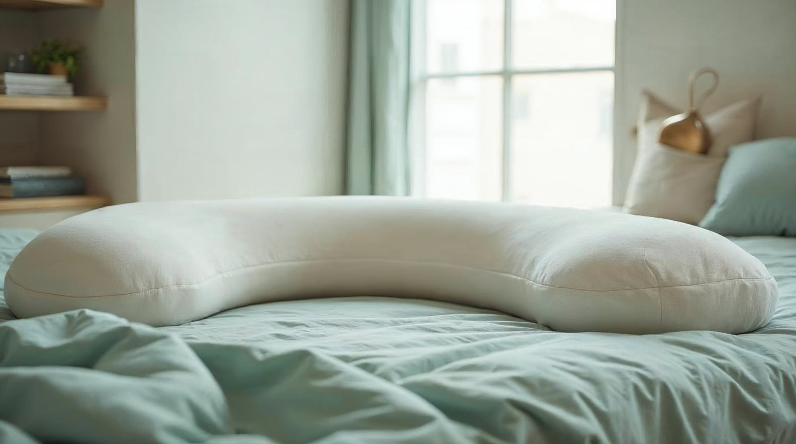
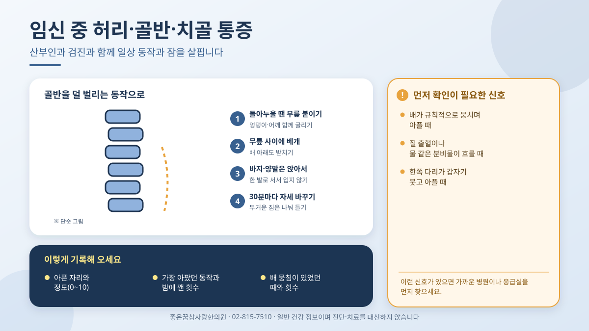

이종호 한의사 감수좋은꿈참사랑한의원 대표원장 (한의사 면허번호 19769)발행 2026-11-26 · 수정 2026-11-26
이 글의 차례
침대에서 돌아눕는 일이 이렇게 큰일인 줄 몰랐습니다. 몸을 옆으로 굴리려는 순간 치골 쪽이 찌릿하고, 엉덩이 뒤가 쿡 찌릅니다. 바지를 입으려 한 발을 드는 것도, 차에서 내리는 것도 조심스럽습니다. 배 속 아기는 잘 크고 있다는데, 내 허리와 골반은 하루하루 버거워집니다.
임신 중 허리와 골반 통증은 아주 흔합니다. 임신부 가운데 꽤 많은 분이 한 번쯤 겪는다고 알려져 있을 만큼, 몸이 아기를 품기 위해 바뀌는 과정에서 생기는 자연스러운 부담입니다. 그렇다고 그냥 참아야만 하는 것은 아닙니다.
진료실에서는 임신 중이라 아무것도 할 수 없지 않으냐는 말씀을 자주 듣습니다. 할 수 있는 것이 생각보다 많습니다. 다만 임신 중에는 무엇이든 순서가 중요합니다. 먼저 임신 주수와 산부인과에서 들은 이야기를 알려 주시고, 그 위에서 할 수 있는 것을 함께 찾아갑니다.
왜 임신 중에 허리와 골반이 아플까요
임신이 진행되면 몸은 출산을 준비하며 골반을 이루는 인대를 조금씩 느슨하게 만듭니다. 릴랙신 같은 호르몬이 이 변화에 관여한다고 알려져 있습니다. 덕분에 아기가 나올 길이 열리지만, 그만큼 골반 관절이 평소보다 흔들리기 쉬워집니다.
배가 앞으로 커지면 몸의 무게 중심도 앞으로 옮겨 갑니다. 넘어지지 않으려고 허리를 뒤로 젖히는 자세가 되면서 허리 아래쪽 근육이 하루 종일 긴장합니다. 체중이 늘어나는 만큼 허리와 골반, 무릎이 받는 부담도 커집니다.
배를 받치는 복부 근육은 늘어나며 힘이 약해지고, 그 몫을 허리와 엉덩이 근육이 대신 떠안습니다. 그래서 오래 서 있거나 한 자세로 오래 앉아 있으면 허리와 엉덩이 쪽이 먼저 지칩니다. 둘째, 셋째 임신이라면 큰아이를 안아 올리는 일까지 더해져 부담이 커집니다.
이전 임신에서 골반 통증이 있었던 분, 임신 전부터 허리가 약했던 분, 일하며 오래 서 있거나 무거운 것을 드는 분은 통증이 더 일찍, 더 크게 오는 경향이 있다고 알려져 있습니다.
한의학에서는 임신 중 허리 통증을 아기를 품느라 허리와 아랫배의 기운이 많이 쓰인 모습으로 보아 왔습니다. 그래서 통증 자리뿐 아니라 잠, 붓기, 피로, 소화를 함께 살핍니다.
임신 초기에도 허리가 묵직하다는 분이 있습니다. 배가 커지기 전이라도 호르몬 변화와 입덧으로 움직임이 줄고, 잠이 흐트러지며 근육이 쉽게 굳기 때문입니다. 시기마다 통증이 오는 이유가 조금씩 달라서 주수를 함께 여쭙습니다.
아픈 자리에 따라 이렇게 나눠 봅니다
임신 중 통증은 크게 허리 쪽과 골반 쪽으로 나눠 볼 수 있습니다. 둘이 함께 오는 분도 많지만, 어느 쪽이 더 큰지에 따라 생활에서 조심할 동작이 달라집니다.
허리 아래쪽이 뻐근한 경우
허리띠 높이쯤, 등뼈 양옆 근육이 뻐근하고 묵직합니다. 오래 서 있거나 오래 앉아 있다 일어설 때 심해지고, 누워 쉬면 조금 나아지는 편입니다. 배가 커지는 중기 이후에 흔하고, 자세와 근육의 피로가 큰 몫을 합니다.
엉덩이 뒤쪽이 찌르듯 아픈 경우
허리보다 아래, 엉덩이 양쪽 뒤의 움푹한 자리(천장관절 부근)가 찌르듯 아픕니다. 한쪽 다리에 체중을 실을 때, 계단을 오를 때, 돌아누울 때 심해지고, 통증이 엉덩이나 허벅지 뒤로 퍼지기도 합니다.
치골이 아픈 경우
두 다리 사이 앞쪽, 치골 부위가 아파서 걸음이 어기적거려집니다. 다리를 벌리거나 한 발로 설 때, 바지를 입을 때, 차에서 내릴 때 찌릿합니다. 이 자리 통증은 임신 후반으로 갈수록 커지는 분이 많습니다.
엉덩이 뒤쪽과 치골의 통증을 묶어 '골반대 통증'이라고 부르기도 합니다. 허리 통증과 달리 걷기, 돌아눕기, 한 발로 서기처럼 골반을 비트는 동작에서 심해지는 것이 특징입니다.
다른 상태와는 이렇게 다릅니다
허리나 엉덩이 통증이 다리 아래까지 저리게 내려가고 발끝 감각이 둔해진다면 신경이 눌린 것일 수 있어 따로 살펴봐야 합니다. 이런 저림은 산부인과에 알리고 필요하면 다른 진료과와 상의합니다.
배가 일정한 간격으로 뭉치면서 허리가 함께 아프다면 근육 통증이 아니라 자궁 수축일 수 있습니다. 옆구리 한쪽이 아프면서 열이 나고 소변이 불편하다면 콩팥이나 방광 쪽 문제일 수 있습니다. 그래서 통증의 자리뿐 아니라 배 뭉침과 소변, 열을 함께 여쭙습니다.
스스로 점검해 보세요
아래 가운데 해당하는 줄에 표시해 두셨다가 진료 때 보여 주세요. 진단을 내리려는 목록은 아닙니다.
- 돌아누울 때 골반이나 치골이 찌릿하다
- 한 발로 서거나 계단을 오를 때 엉덩이 뒤가 아프다
- 오래 서 있으면 허리가 묵직하고 앉으면 조금 낫다
- 아침보다 저녁에 통증이 커진다
- 다리 아래쪽까지 저린 느낌이 있다
- 통증 때문에 밤에 자주 깬다

진료실에서 자주 듣는 걱정
임신 중에 아프다고 하면 아기에게 안 좋은 것은 아닐까 걱정하시는 분이 많습니다. 허리와 골반 통증은 대개 몸이 바뀌는 과정에서 생기는 부담이고, 통증을 알리고 생활을 조정하는 것은 아기와 엄마 모두를 위한 일입니다.
출산하면 어차피 사라질 테니 참겠다는 분도 있습니다. 통증 때문에 잠을 못 자고 움직이지 못하면 체력과 기분이 함께 떨어집니다. 참기만 하기보다 할 수 있는 것을 찾아보는 편이 남은 기간을 지내는 데 보탬이 됩니다.
먼저 이렇게 여쭙니다
진료실에서는 대략 이런 순서로 여쭙습니다. 처음부터 다 기억하지 못하셔도 괜찮습니다.
- 지금 임신 몇 주이고, 산부인과에서 특별히 조심하라고 들은 것이 있나요?
- 가장 아픈 자리는 허리, 엉덩이 뒤, 치골 가운데 어디인가요?
- 어떤 동작에서 가장 아프고, 어떤 자세에서 편한가요?
- 배가 뭉치는 느낌은 하루에 몇 번쯤 있나요?
- 다리 저림이나 발 붓기, 밤의 쥐는 어떤가요?
- 하루에 서 있는 시간과 앉아 있는 시간은 어떤가요? 일은 계속하고 계신가요?
- 이전 임신이나 임신 전에 허리, 골반 통증이 있었나요?
- 지금 드시는 약이나 영양제가 있나요?
임신 주수를 가장 먼저 여쭙는 이유는 같은 통증이라도 주수에 따라 할 수 있는 것과 조심할 것이 달라지기 때문입니다. 산부인과에서 들은 주의 사항이나 산모수첩에 적힌 내용을 보여 주셔도 좋습니다.
일상에서 먼저 해 볼 수 있는 것
임신 중 허리와 골반 통증은 생활 속 동작을 조금 바꾸는 것만으로도 부담을 덜 수 있습니다. 아래에서 몇 가지만 골라 보세요.
- 돌아누울 때는 무릎을 붙인 채 엉덩이와 어깨를 한꺼번에 굴리기
- 옆으로 누울 때 무릎 사이와 배 아래에 베개 받치기
- 바지와 양말은 서서 한 발로 입지 말고 앉아서 입기
- 차에서 내릴 때는 두 다리를 함께 모아 돌린 뒤 일어서기
- 계단은 한 칸씩, 아픈 쪽이 아닌 다리부터 올라가기
- 무거운 장바구니는 나눠 들거나 가족에게 부탁하기
- 오래 서 있어야 하면 30분마다 앉거나 자세 바꾸기
걷기는 대체로 도움이 되는 분이 많지만, 치골이 아픈 분은 보폭을 줄이고 천천히 걷는 편이 좋습니다. 산부인과에서 괜찮다고 한 범위 안에서 임신부 체조나 수중 걷기처럼 골반에 무리가 덜한 움직임을 찾아보세요.
의자에 앉을 때는 엉덩이를 깊숙이 넣고 허리 뒤에 작은 쿠션을 받치세요. 다리를 꼬거나 한쪽으로 기대는 자세는 골반을 비틀기 쉬워 피하는 편이 좋습니다. 낮은 소파보다 무릎이 엉덩이보다 조금 낮은 의자가 일어서기 편합니다.
골반 벨트나 임신부 복대가 도움이 되는 분도 있습니다. 다만 너무 조이면 불편할 수 있으니, 산부인과에서 맞는 방법을 안내받고 쓰시길 권합니다. 따뜻한 찜질은 짧게, 배가 아닌 허리와 엉덩이 쪽에만 쓰세요.
진료 전에 무엇을 알려야 하는지는 임신 중이거나 임신 가능성이 있을 때는 한의원에 무엇을 알려야 하나요?에 따로 정리해 두었습니다.
밤잠을 조금 편하게
임신 중 허리와 골반 통증은 밤에 더 서럽습니다. 배가 커지면 누울 수 있는 자세가 줄고, 돌아누울 때마다 잠이 깹니다. 중기 이후에는 똑바로 오래 눕기보다 옆으로 눕는 자세가 대체로 편하다고 알려져 있습니다.
옆으로 누울 때는 위쪽 무릎이 아래로 떨어지지 않도록 무릎과 발목 사이에 긴 베개를 끼우세요. 골반이 덜 비틀려 엉덩이 뒤쪽의 부담을 줄일 수 있습니다. 등 뒤에도 베개를 하나 대면 몸이 뒤로 넘어가지 않아 근육이 덜 긴장합니다.
침대에서 일어날 때는 먼저 옆으로 돌아누운 뒤, 팔로 바닥을 밀며 천천히 앉으세요. 배에 힘을 주며 벌떡 일어나는 동작은 허리와 배 모두에 부담이 됩니다. 밤중 화장실 길에는 작은 불을 켜 두어 넘어지지 않게 하세요.
일을 계속하는 임신부라면
직장에서 하루 종일 앉아 있거나 서 있어야 하는 분은 통증이 저녁으로 갈수록 커지기 쉽습니다. 앉아서 일한다면 한 시간에 한 번은 일어나 천천히 걷고, 발 아래에 낮은 받침을 두어 무릎을 조금 높여 보세요.
서서 일한다면 한쪽 다리에만 체중을 싣지 말고 양발에 고루 나누거나, 낮은 발판에 한 발씩 번갈아 올려 두세요. 무거운 물건을 드는 일은 가능한 한 동료에게 부탁하고, 필요하면 임신부 근로 보호 제도를 알아 두시는 것도 좋습니다.
가족의 도움도 큽니다. 빨래 바구니 들기, 바닥 걸레질, 욕실 청소처럼 허리를 숙이고 비트는 집안일은 이 시기만큼은 가족에게 맡겨 주세요. 큰아이가 있다면 안아 올리는 대신 아이가 소파나 의자에 올라와 안기게 하는 것도 방법입니다.
장을 볼 때는 카트를 밀며 몸을 기대고, 무거운 물건은 배달을 이용하세요. 계단이 많은 길보다 조금 돌아가더라도 평평한 길을 고르는 편이 골반에는 편합니다.
한의원에서 함께 살필 수 있는 경우
임신 중이라도 산부인과와 상의한 뒤 한의원 진료를 함께 받으실 수 있습니다. 이런 분이라면 상담해 보세요.
- 허리와 골반 통증으로 돌아눕기, 걷기 같은 일상 동작이 힘든 경우
- 통증 때문에 잠이 자주 깨고 피로가 쌓이는 경우
- 다리가 붓고 무거우며 밤에 쥐가 자주 나는 경우
- 일을 계속하며 오래 서 있거나 앉아 있어야 하는 경우
좋은꿈참사랑한의원에 오시면 모든 분께 그렇듯 맥부터 짚으며 임신 주수와 산부인과에서 들은 내용을 가장 먼저 여쭙습니다. 아픈 자리와 동작을 살핀 뒤, 침을 쓸지 생활 관리부터 할지는 진찰 뒤 함께 상의합니다.
침을 쓰게 되더라도 주수와 그날 몸 상태에 맞춰 자리와 자극을 조심스럽게 고릅니다. 임신 중 한약은 더욱 신중해야 해서, 필요한지부터 진찰 뒤 산부인과 주치의와 상의해 정합니다. 추나를 하게 되더라도 엎드리는 자세나 배에 압력이 가는 동작은 피합니다.
진료 중에 배가 뭉치거나 불편한 느낌이 들면 바로 말씀해 주세요. 그 자리에서 멈추고 편한 자세로 바꿉니다. 어느 정도 이어 갈지는 진찰 뒤 반응을 보며 함께 정합니다.
출산 뒤에도 이어진다면
임신 중 골반 통증은 출산 뒤 몇 주에서 몇 달 사이 줄어드는 경우가 많다고 알려져 있습니다. 다만 아기를 안고 수유하며 허리를 숙이는 일이 많아지면서 통증이 이어지는 분도 있습니다.
출산 뒤에도 골반과 허리 통증이 계속된다면 산후 검진 때 산부인과에 말씀하시고, 한의원에서는 출산 방식과 회복 정도를 확인한 뒤 함께 살핍니다. 출산 뒤 회복 전반은 출산 뒤 몸 회복, 관절·땀·잠·기분은 무엇부터 살피나요?에 정리해 두었습니다.
이렇게 기록해 오시면 상담이 쉬워집니다
통증은 진료실에 앉아 있을 때보다 집에서 움직일 때 더 잘 드러납니다. 일주일만 아래처럼 적어 보세요.
- 아픈 자리(허리, 엉덩이 뒤, 치골)와 그 정도(0~10점)
- 가장 아팠던 동작과 시각
- 밤에 통증 때문에 깬 횟수
- 하루 서 있던 시간과 걸은 시간
- 배 뭉침이 있었던 때와 횟수
- 산부인과 검진 날짜와 들은 이야기
통증이 심했던 날 무엇을 했는지 한 줄 덧붙이면, 장보기나 청소처럼 통증을 키우는 일이 무엇인지 함께 찾기 쉬워집니다. 아픈 자리를 손가락으로 짚은 사진이나, 아픈 동작을 짧게 영상으로 남겨 오셔도 이해에 큰 도움이 됩니다. 기억나는 만큼만 적어 오세요.
아기를 품는 몸은 매주 달라집니다. 어제 괜찮던 동작이 오늘 버거울 수도 있습니다. 그 변화를 혼자 참지 마시고, 산부인과와 한의원에 함께 알려 주세요. 다음에 오시면 지난주 가장 힘들었던 동작부터 여쭙겠습니다.
이런 증상은 먼저 확인이 필요합니다
- 배가 규칙적으로 뭉치거나, 질 출혈이 있거나, 물 같은 분비물(양수)이 흐르는 경우
- 한쪽 다리가 갑자기 붓거나, 열이 나거나 옆구리가 심하게 아픈 경우
이런 신호가 있으면 한의원보다 가까운 병원이나 응급실을 먼저 찾으세요.
함께 읽으면 좋은 글
- 임신 중이거나 임신 가능성이 있을 때는 한의원에 무엇을 알려야 하나요?
- 임신 중 입덧이 심할 때는 하루를 어떻게 지내고, 한의원에는 무엇을 알려야 하나요?
- 출산 뒤 몸 회복, 관절·땀·잠·기분은 무엇부터 살피나요?
- 임신을 준비 중이거나 임신 가능성이 있으면 추나 전에 무엇을 알려야 하나요?

여쭙는 것
- 지금 임신 몇 주이고, 산부인과에서 특별히 조심하라고 들은 것이 있나요?
- 가장 아픈 자리는 허리, 엉덩이 뒤, 치골 가운데 어디인가요?
- 어떤 동작에서 가장 아프고, 어떤 자세에서 편한가요?
생활에서 해 볼 것
- 돌아누울 때는 무릎을 붙인 채 엉덩이와 어깨를 한꺼번에 굴리기
- 옆으로 누울 때 무릎 사이와 배 아래에 베개 받치기
- 바지와 양말은 서서 한 발로 입지 말고 앉아서 입기
한의원에서 함께 살필 것
- 허리와 골반 통증으로 돌아눕기, 걷기 같은 일상 동작이 힘든 경우
- 통증 때문에 잠이 자주 깨고 피로가 쌓이는 경우
- 다리가 붓고 무거우며 밤에 쥐가 자주 나는 경우
먼저 확인이 필요한 신호
- 배가 규칙적으로 뭉치거나, 질 출혈이 있거나, 물 같은 분비물(양수)이 흐르는 경우
- 한쪽 다리가 갑자기 붓거나, 열이 나거나 옆구리가 심하게 아픈 경우
한눈에 보는 표
| 구분 | 핵심 |
|---|---|
| 여쭙는 것 | 지금 임신 몇 주이고, 산부인과에서 특별히 조심하라고 들은 것이 있나요? 가장 아픈 자리는 허리, 엉덩이 뒤, 치골 가운데 어디인가요? |
| 생활에서 해 볼 것 | 돌아누울 때는 무릎을 붙인 채 엉덩이와 어깨를 한꺼번에 굴리기 옆으로 누울 때 무릎 사이와 배 아래에 베개 받치기 |
| 한의원에서 함께 살필 것 | 허리와 골반 통증으로 돌아눕기, 걷기 같은 일상 동작이 힘든 경우 통증 때문에 잠이 자주 깨고 피로가 쌓이는 경우 |
| 먼저 확인이 필요한 신호 | 배가 규칙적으로 뭉치거나, 질 출혈이 있거나, 물 같은 분비물(양수)이 흐르는 경우 한쪽 다리가 갑자기 붓거나, 열이 나거나 옆구리가 심하게 아픈 경우 |
자주 묻는 질문
임신 중에도 침을 맞을 수 있나요?
임신 주수와 그날의 몸 상태, 산부인과에서 들은 주의 사항을 먼저 확인하고, 침을 쓸지와 자리·자극은 진찰 뒤 함께 상의합니다. 진료 전 미리 산부인과 주치의와 상의하시고 그 내용을 알려 주세요.
임신 중 허리가 아픈데 파스를 붙여도 되나요?
파스 가운데는 임신 중 피해야 하는 성분이 든 것도 있습니다. 붙이기 전에 산부인과나 약사에게 확인하세요.
골반 벨트는 언제부터 하면 좋나요?
통증이 있는 분께 도움이 되는 경우가 있지만, 시기와 조이는 정도는 몸에 따라 다릅니다. 산부인과에서 안내받은 방법에 맞춰 쓰시길 권합니다.
임신 중에 추나 교정을 받아도 되나요?
임신 중에는 엎드리는 자세나 배에 압력이 가는 동작은 피합니다. 추나를 할지, 한다면 어떤 방법이 맞을지는 산부인과 주치의와 먼저 상의하신 뒤 진찰하고 함께 정합니다.
출산하면 골반 통증이 사라지나요?
출산 뒤 몇 주에서 몇 달 사이 줄어드는 경우가 많다고 알려져 있지만, 사람마다 다릅니다. 출산 뒤에도 이어진다면 산후 검진 때 말씀하시고 함께 살펴보세요.
좋은꿈참사랑한의원은 재진 때 지난번 이야기부터 이어서 여쭙니다. 진료시간과 예약은 오시는 길에서 확인하세요.
어디서 상담받을 수 있나요?
좋은꿈참사랑한의원은 서울 동작구 만양로2길 2 신성빌딩 3층·5층(서울 동작구 상도동, 7호선 상도역 3번 출구 근처)에 있습니다. 한의사 3명(이종호 대표원장, 조영기 수석진료원장, 정원영 진료원장)이 진료합니다. 진료시간은 평일 09:30~20:00(점심 13:00~14:00), 토·일·공휴일 09:30~15:00이며, 방문 전 전화로 확인을 권합니다. 예약은 네이버 예약, 카카오톡 상담, 전화 02-815-7510로 받습니다.
이 글은 일반적인 건강 정보이며 개인의 진단이나 치료를 대신하지 않습니다. 증상이 있거나 복용 중인 약이 있다면 진료를 통해 확인하세요. 치료 효과는 개인마다 다를 수 있습니다.
작성 기준: 일반적으로 알려져 있는 건강 정보를 참고해 정리했습니다(대표원장 감수). 증상 기록은 1~2주 동안 하루 1회, 비슷한 시간에 적어 오시면 지난 상태와 비교하기 쉽습니다.